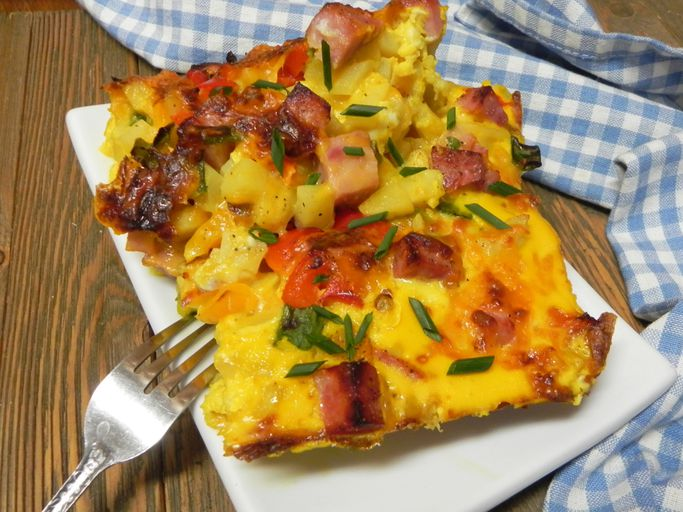

Slow Cooker Overnight Ham and Cheese Breakfast Casserole

Description
Wake up and have breakfast already ready to go for the whole family!
Slow-cooked to perfection and filled with bell peppers, onions, and
cheese.
Ingredients
1 cup Almond Breeze Unsweetened Original Almondmilk
30 ounces frozen hash browns
16 ounces diced ham
1 yellow bell pepper, diced
1 red bell pepper, diced
5 green onions, thinly sliced
12 eggs
8 ounces shredded cheese
salt and freshly ground black pepper to taste
chives for garnish
Steps
Combine eggs and Almond Breeze Unsweetened Original Almondmilk in a
large bowl; whisk to combine. Season with salt and pepper.
Generously spray a 6 qt slow cooker with cooking spray or use a slow
cooker liner.
Layer 1/2 of the frozen hash browns, 1/2 of the diced ham, 1/2 of
the diced bell peppers, 1/2 of the green onions,
and 1/2 of the shredded cheese into the slow cooker and season with
salt and pepper as you go. Repeat layering with the second half of
the ingredients. Pour egg mixture over the top.
Cover slow cooker and cook on Low until eggs are set, 7 to 8 hours.
Top with fresh chives if desired.